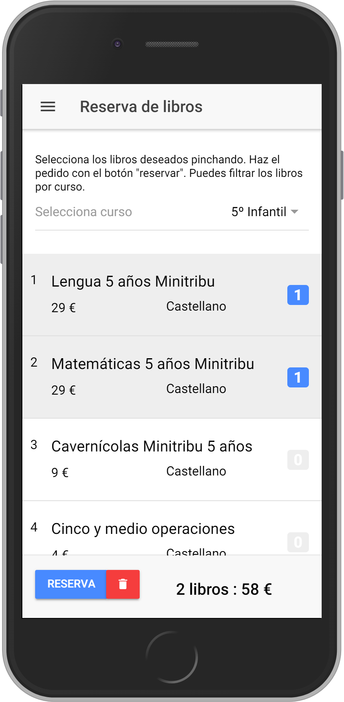

AMPA Colegio Sagrado Corazón de Jesús de Meliana
Bienvenidos a la web del AMPA
Desde aquí queremos manteneros informados de las novedades del colegio y de la asociación de madres y padres
Aplicación de reserva de libros para el curso 2018-2019
Este año podéis reservar los libros de los alumnos del colegio a través de una sencilla aplicación web. Al entrar podéis elegir el curso y los libros a reservar, después debéis introducir los datos del alumno, madre y/o padre.
La aplicación os asignará un número de reserva que junto con el móvil que introduzcais os permitirá consultar más tarde la reserva
Ir a la webAplicación de reserva de libros para el curso 2018-2019
Este año podéis reservar los libros de los alumnos del colegio a través de una sencilla aplicación web. Al entrar podéis elegir el curso y los libros a reservar, después debéis introducir los datos del alumno, madre y/o padre.
La aplicación os asignará un número de reserva que junto con el móvil que introduzcais os permitirá consultar más tarde la reserva
Ir a la webENLACES DE INTERÉS
Colegio Sagrado Corazón de Meliana
Ayuntamiento de Meliana
http://www.meliana.es/Instituto Municipal de Cultura de Meliana
http://www.imcmeliana.com/Quiénes somos
La AMPA, o lo que es lo mismo, Asociación de Padres y Madres de Alumnos, es una organización sin ánimo de lucro, formada por padres, madres o tutores del alumnado del Colegio Sagrado Corazón de Meliana, que deciden inscribirse voluntariamente y pagar una cuota periódica.
Una vez hecha la inscripción, se forma parte del AMPA hasta que finaliza la etapa escolar, o bien, hasta que se decida darse de baja por cualquier motivo.
Acciones llevadas a cabo por el AMPA:
Informativas: Las AMPA establecen vías de información entre el propio centro y las familias, utilizando para ello todos los recursos necesarios. Incluso estamos viendo una predilección por las nuevas tecnologías para crear un canal comunicativo eficaz. Esta información que se proporciona es relativa a la organización, legislación, instrucciones sobre cómo se desarrolla el curso, funcionamiento del consejo escolar, actividades, …
Formativas: Otra de las funciones principales de esta asociación es la de formar a las familias en los criterios educativos, evolución de sus hijos y proyectos que se desarrollan tanto en el centro como en la etapa educativa en general. Es decir, que el AMPA trata de involucrar a los padres y madres en todo lo relativo a la educación de los alumnos.
Las funciones del Ampa, entre otras son:
- Favorecer la relación y coordinación entre las familias y el personal docente.
- Trabajar para mejorar la participación y el compromiso de los padres, hijos y de la sociedad en general, y de la educativa en particular.
- Gestionar la adquisición de libros de texto.
- Organizar y colaborar en actividades formativas, tales como charlas, semana cultural, fiesta fin de curso etc., que favorecen la educación de nuestros hijos y facilitan el conocimiento y la relación entre las familias.
No es obligatorio formar parte del AMPA, pero sí recomendable.
Estatutos del AMPA
Puedes descargar los estatutos en PDF pinchando aquí
Asociación de madres y padres de alumnos
Colegio Sagrado Corazón de Meliana
C/Eduardo Romero, 6. 46133-Meliana
E-Mail: ampasagradocorazonmeliana@gmail.com
Colegio Sagrado Corazón de Meliana
C/Eduardo Romero, 6. 46133-Meliana
E-Mail: ampasagradocorazonmeliana@gmail.com